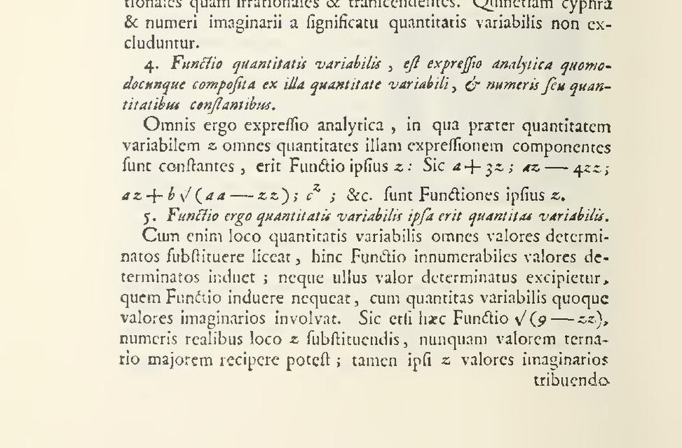
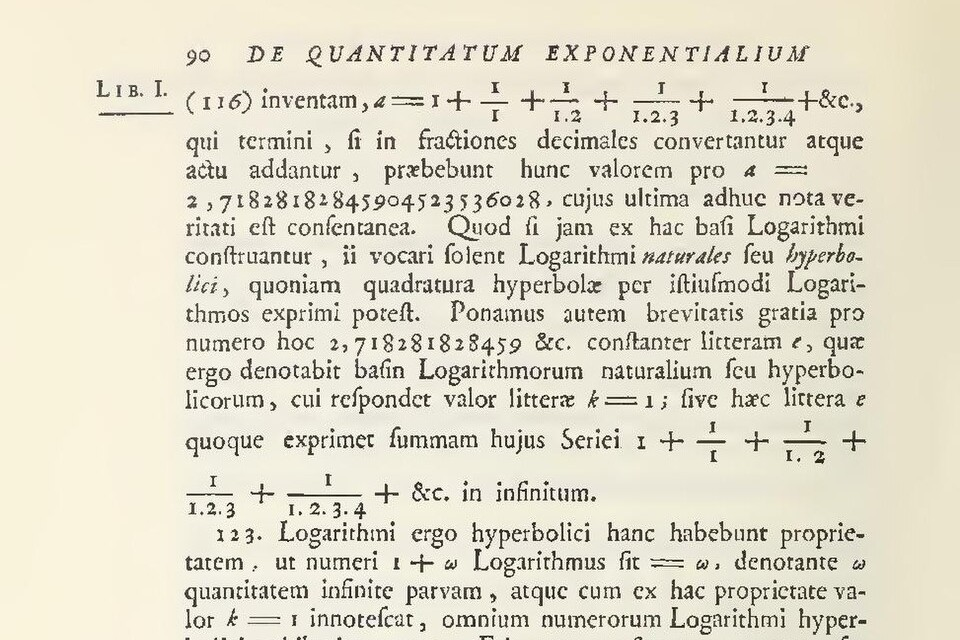
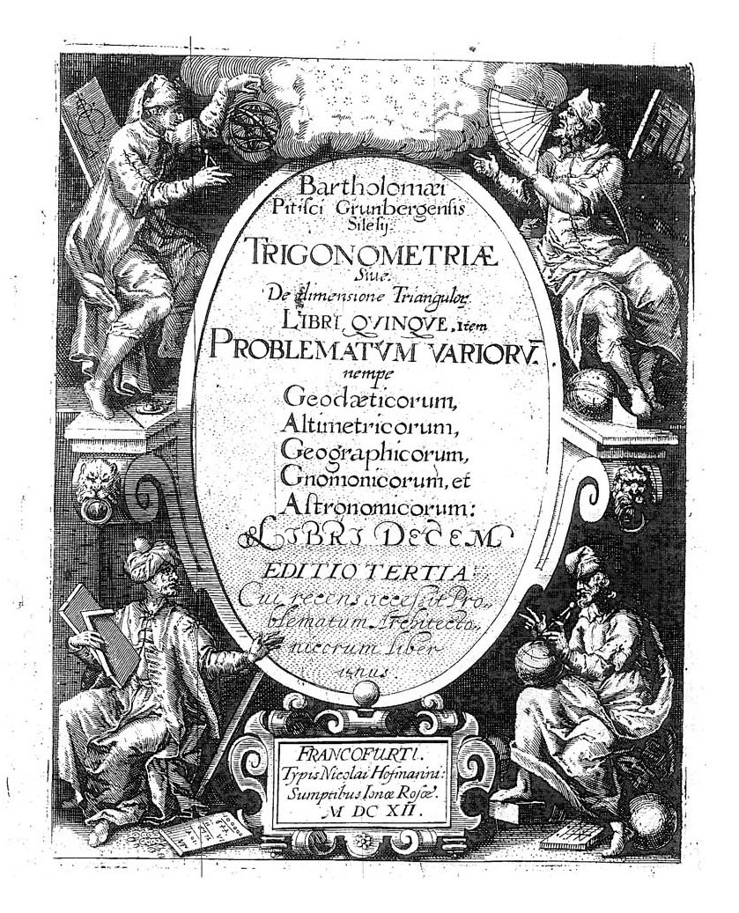
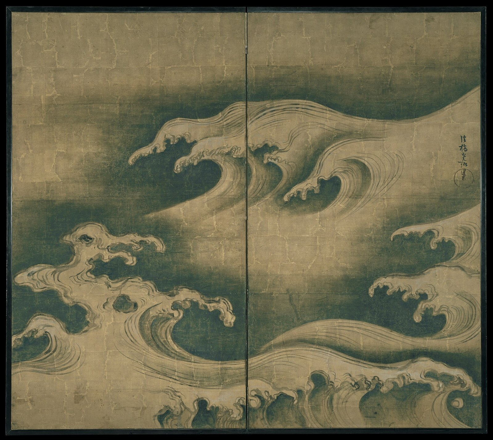
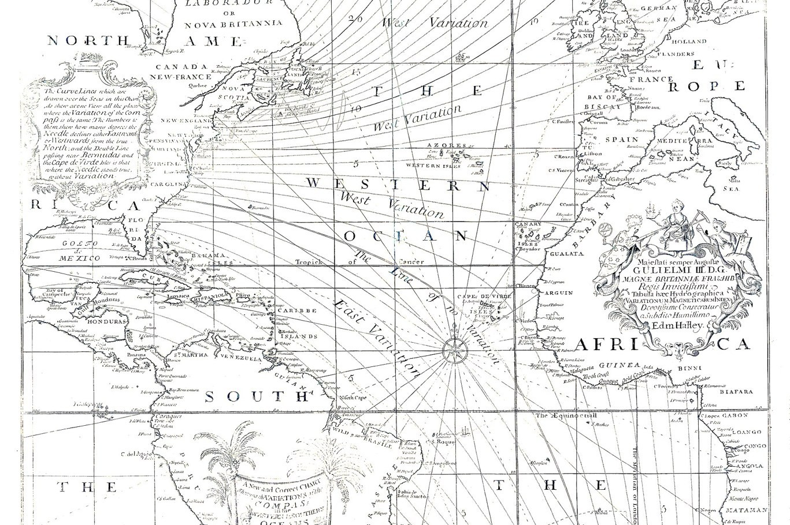

第3回
水を受けて水車が回り、米が搗かれる。入力に出力を結びつける仕掛けだ。
葛飾北斎「冨嶽三十六景 隠田の水車」（メトロポリタン美術館）／CC0／Wikimedia Commons（1830年ごろ。上下を切り落とし、横長に切り出した）
「入力に出力を対応させる規則」としての関数を、f と f(x) の違いから始めて、定義域・合成・逆関数・指数と対数・絶対値・多変数・陰関数・媒介変数まで、記号を省略せずに確かめる。第1回が予告した「引数の省略（ψ(x,t)→ψ）」と「sin²x・sin x²・sin⁻¹x の読み分け」もこの回で回収する。
第1回と同じく、新しい記号は緑色の枠（記号）で「①読み方 ②日本語での意味 ③省略していない書き方 ④どこで出会うか」を書く。高校で習った内容も、一度は書く。覚えている部分は飛ばしてよい。前の回の記号は、使うたびにリンクを張る。
この回は 第1回（等号・添字・冪・関数の引数の省略）と 第2回（集合・区間・「すべての」「存在する」）を土台にしている。記号に迷ったら、表のリンクから戻る。
まず、この回で新しく説明する記号。右の列の「→」で、説明のある節へ飛べる。
| 記号 | 読み方 | ざっくりした意味 | 説明 |
|---|---|---|---|
| $f\colon A\to B$ | エフ、A から B へ | A の各要素に B の要素を1つ対応させる規則 $f$ | →1.2 |
| $f(x)$ | エフ・オブ・エックス | 規則 $f$ に $x$ を入れたときの値 | →1.4 |
| $x\mapsto$ | エックス・マップス・ツー | $x$ を〜に対応させる（入力と出力の対） | →1.5 |
| 定義域・終域・値域・像 | — | 入力の集合・出力の置き場・実際に出る出力の集合 | →1.6 |
| 単射・全射・全単射 | — | 重ならない／余りがない／両方 | →1.7 |
| $f\circ g$ | エフ・まる・ジー（合成） | 先に $g$、次に $f$ を行う規則 | →2.1 |
| $f^{-1}$ | エフ・インバース | $f$ を元に戻す規則（逆数ではない） | →2.2 |
| $f^{-1}(S)$（$S$ は集合） | $S$ の逆像 | $S$ に入るものを出す入力の集合 | →2.5 |
| $\exp x$, $e^x$ | エクスポネンシャル | $e$ の $x$ 乗 | →3.2 |
| $\log_a x$, $\ln x$, $\log x$ | ログ、エルエヌ | $a$ を何乗したら $x$ になるか | →3.3 |
| $|x|$ | $x$ の絶対値 | 原点からの距離 | →4.1 |
| $\operatorname{sgn}x$ | サイン（符号関数） | $+1,\ 0,\ -1$ のどれか | →4.2 |
| $\sin^2x$, $\sin x^2$, $\sin^{-1}x$ | — | 三角関数の肩の数字の読み分け | →5.2 |
| $f(x,y)$（多変数） | — | 入力が2つ以上の関数 | →6.1 |
| $F(x,y)=0$（陰関数） | — | 関係式で与えられた関数 | →6.2 |
| $x=x(t)$（媒介変数） | — | 別の変数 $t$ を経由して与える | →6.3 |
| 記号 | 意味 | 説明の場所 |
|---|---|---|
| $=$, $:=$ | 等しい／左の名前を右で決める | 第1回 2.1、第1回 2.2 |
| $\approx$, $\neq$, $\lt\ \le$ | だいたい等しい／等しくない／大小 | 第1回 2.4、第1回 2.6 |
| 添字 $x_1$、冪 $x^2$、$x^{(2)}$ | 番号／掛け算の回数／冪ではない上付き | 第1回 4.1、4.2、4.3 |
| プライム $f'$ | 別のもの、または導関数 | 第1回 4.4 |
| 省略の段階（掛け算・引数） | S0, S1, … の考え方 | 第1回 6.1、6.2、6.3 |
| 演算の優先順位 | 括弧・冪・掛け算・足し算の順 | 第1回 5.2 |
| $\in$, $\{\,\mid\,\}$, $\subset$ | 属する／条件で作る集合／部分集合 | 第2回 $\in$、集合の書き方、部分集合 |
| $\mathbb N,\mathbb Z,\mathbb Q,\mathbb R,\mathbb C$ | 数の集合 | 第2回 数の集合 |
| $[a,b]$, $(a,b)$ | 区間 | 第2回 区間、区間の省略 |
| $A\times B$, $\mathbb R^n$ | 直積／数の組全体 | 第2回 直積 |
| $\forall$, $\exists$, $\exists !$ | すべての／存在する／ただ1つ存在する | $\forall$、$\exists$、$\exists !$、「すべての」の省略 |
| $\Rightarrow$, $\Leftrightarrow$ | ならば／同値 | $\Rightarrow$、$\Leftrightarrow$ |
高校では「$y=2x+1$ のグラフを描け」と習う。このとき「関数」は、$x$ と $y$ の間の式のように見える。ところが大学の本では「関数 $f\colon\mathbb R\to\mathbb R$」「関数 $\psi$」のように、式を見せずに文字だけで関数を呼ぶことが増える。さらに、同じ本の中で「$f(x)$ を微分する」とも書く。
この「文字だけの関数」と「式で書いた関数」が、どう同じで、どう違うのかを知らないと、あとの回（微分・偏微分・ラプラス変換・量子力学）で出てくる $f$ と $f(x)$ の使い分けが全部あやふやになる。この回では、まず関数の意味を一本に決める。
PHOTO 1｜現実

1748年、オイラーは『無限解析入門』で、変数量の関数を「その変数量と定数から何らかの形で組み立てた解析的な式」と定めた。
Leonhard Euler, Introductio in analysin infinitorum 第1巻（1967年復刻版のスキャン）／Public domain／Wikimedia Commons（1748年、p.4の下半分）
最初に日本語で言う。
関数とは、「入力」を1つ決めると、「出力」がちょうど1つ決まる規則である。
「入力として使ってよいものの集合」と「出力が入る集合」を、先に決めておく。前者を $A$、後者を $B$ と呼ぶことにする。
①読み方：「$f$ は $A$ から $B$ への関数」「$f$ コロン $A$ アロー $B$」。
②日本語での意味：集合 $A$ のどの要素を入力しても、集合 $B$ の要素がちょうど1つ出てくる、という規則に $f$ という名前をつけた。
③省略していない書き方：次の文を、$f\colon A\to B$ という記号にまとめている。
「$A$ のすべての要素 $x$ について、$B$ の要素 $y$ で、$f$ が $x$ に対応させるものが、ただ1つ存在する」。
記号で書くと、$\forall x\in A,\ \exists !\,y\in B$（$f$ が $x$ に $y$ を対応させる）。ここで $\forall$ は 「すべての」、$\exists !$ は 「ただ1つ存在する」、$\in$ は 「属する」 である。
④どこで出会うか：すべての科目。「写像」は「関数」とほぼ同じ意味で、出力が数でないとき（ベクトル、行列、関数など）に好まれる言い方。この教材では、入力と出力が何であっても同じ定義で通す。
「ちょうど1つ」には2つの要求が入っている。
この2つは、1.7 で「関数でないもの」を見るときに、もう一度使う。
$A=\mathbb R$、$B=\mathbb R$（実数全体の集合）として、「入力を2倍して1を足す」規則を $f$ と名づける。入力を1つずつ入れて、出力を調べる。
| 入力 $x$ | $2x$（2倍する） | $2x+1$（1を足す）＝出力 |
|---|---|---|
| $-1$ | $-2$ | $-1$ |
| $0$ | $0$ | $1$ |
| $1$ | $2$ | $3$ |
| $2$ | $4$ | $5$ |
| $3$ | $6$ | $7$ |
入力が決まると、出力が1つ決まっている。たとえば入力 $3$ に対しては、出力 $7$ のただ1つ。これが関数である。表の1行ごとに「$3$ に対して $7$」と書いた対応を並べたものが、この規則の中身だと思えばよい。
図1.1 は、この規則を「機械」と「矢印」の2通りに描いたものである。上は入力 $3$ を1つ入れたところ、下は表の5行を矢印で並べたところ。
ここで、混乱の最大の原因を片づける。
①読み方：$f$ は「エフ」。$f(x)$ は「エフ・オブ・エックス」または「エフ・エックス」。
②日本語での意味：$f$ は規則そのもの（機械）。$f(x)$ は、その機械に入力 $x$ を入れたときに出てくる値（出力）。
③省略していない書き方：「$f(x)$」は「関数 $f$ の、入力 $x$ における値」の省略。$x$ に具体的な数を入れた $f(3)$ は、ただの数（この例では $7$）である。
④どこで出会うか：すべての科目。特に「$f$ を微分する」と「$f(x)$ を微分する」、「$\psi$ はヒルベルト空間の元」と「$\psi(x)$ は位置 $x$ での振幅」の違い。
| 書いたもの | 何か | 1.3 の例での姿 |
|---|---|---|
| $f$ | 規則そのもの（関数） | 「2倍して1を足す」という規則全体 |
| $f(3)$ | 数（$x=3$ での値） | $2\times 3+1=7$ |
| $f(x)$ | $x$ に入る数しだいの値。$x$ が決まるまでは数ではない | $2x+1$ |
| $f(a+1)$ | 入力が $a+1$ のときの値 | $2(a+1)+1=2a+3$ |
| $f(x)+1$ | $f(x)$ の値に、あとから1を足したもの | $2x+1+1=2x+2$ |
| $f(x+1)$ | 入力を $x+1$ にしたときの値 | $2(x+1)+1=2x+3$ |
最後の2行を見比べる。$f(x)+1$ と $f(x+1)$ では、1が入る場所が違う。前者は出力に1を足し、後者は入力に1を足す。値も違う（$x=1$ のとき、$f(1)+1=3+1=4$ で、$f(1+1)=f(2)=5$）。
図1.2 は、$x=1$ のときの2つの計算を、数が機械を通る順に並べたものである。「+1」の機械が $f$ の後ろにあるか前にあるかだけが違う。
(1) $f(x)$ を「$f$ かける $x$」と読む。$f$ が関数のとき、$f(x)$ は掛け算ではない。第1回の省略の段階：掛け算で見たとおり、並べて書いたときの意味は、並ぶ記号の種類で決まる。$f$ が数なら $f(x)$ は「$f$ かける $x$」にもなりうる。$f$ が関数と宣言されているかを確かめる。
(2) 「関数 $f(x)=2x+1$」と書く本が多い。厳密には「関数 $f$ を、$f(x)=2x+1$ で定める」ことの省略である。入力の文字 $x$ は仮の名前で、$f(t)=2t+1$ と書いても同じ関数である（「仮の名前」は 第4回のダミー添字でもう一度出てくる）。
2つの関数が「同じ」とは、次の2つが両方成り立つことである。入力の集合 $A$ が同じで、$A$ のすべての入力で出力が同じ。たとえば $A=\mathbb R$ で $f(x)=x$ と、$A=\mathbb R\setminus\{0\}$（0を除く）で $g(x)=x^2/x$ は、$g$ が $x=0$ を入力にできない（分母が0）ので、同じ関数ではない。（$\setminus$ は 第2回の差集合。）
$f\colon A\to B$ の矢印「$\to$」は、集合から集合への矢印だった。では、個々の入力から個々の出力への対応は、どう書くか。別の形の矢印を使う。
①読み方：「$x$ マップス・ツー〜」「$x$ を〜に写す」。
②日本語での意味：左の入力 $x$ に対して、右の出力を対応させる。要素から要素への矢印（棒がついて「$\mapsto$」の形）。
③省略していない書き方：$f\colon A\to B,\ x\mapsto 2x+1$ は、「$A$ から $B$ への関数 $f$ は、入力 $x$ に出力 $2x+1$ を対応させる」の省略。続けて書くと、
$$ f\colon \mathbb R\to\mathbb R,\qquad x\mapsto 2x+1 $$
これで入力の集合・出力の集合・規則の3つが全部そろう。（$f(x)=2x+1$ だけでは、$A$ と $B$ がわからない。）
④どこで出会うか：写像を明示的に書く場面（線形代数、位相、量子力学の演算子）。名前をつけずに「$x\mapsto x^2$」とだけ書いて、「$x$ を $x^2$ に写す関数」を指すこともある。
| 矢印 | つなぐもの | 例 |
|---|---|---|
| $\to$ | 集合 → 集合 | $f\colon\mathbb R\to\mathbb R$ |
| $\mapsto$ | 要素 → 要素 | $3\mapsto 7$、または $x\mapsto 2x+1$ |
読み方の確認として、$f\colon\mathbb R\to\mathbb R,\ x\mapsto 2x+1$ を日本語に直す。「$f$ は、実数から実数への関数で、実数 $x$ を $2x+1$ に写す」。
動機：「$f(x)=1/x$」と書いただけでは、$x=0$ を入れてよいかどうかわからない。入力の集合と出力の置き場所に、それぞれ名前が必要になる。
①読み方：定義域（ていぎいき）、終域（しゅういき）、値域（ちいき）、像（ぞう）。英語では domain, codomain, range, image。
②日本語での意味：$f\colon A\to B$ に対して、
③省略していない書き方：$S\subset A$ に対して、
$$ f(S) := \{\, f(x) \mid x\in S \,\} $$
これは 第2回の集合の書き方で、「$S$ の要素 $x$ のそれぞれについて作った $f(x)$ を集めた集合」と読む。（$\subset$ は部分集合、$:=$ は定義の等号。）値域 $=f(A)$。
④どこで出会うか：関数を扱うすべての場面。逆関数（2.2）、線形代数の「像」（第17回）、確率変数の取りうる値。
最小の具体例。$f\colon\mathbb R\to\mathbb R,\ x\mapsto x^2$ を考える。
終域は $\mathbb R$ と宣言したのに、値域 $[0,\infty)$ は $\mathbb R$ の一部にすぎない。終域は宣言であり、値域は実際の結果である。
図1.3 は、$x\mapsto x^2$ のグラフに、値域と像を色で書き込んだものである。出力は縦軸に並ぶので、「出力の集合」は縦軸の上の範囲として見える。
本によって、「値域」が指すものが違う。
どちらの流派かは、その本の定義の箇所で確かめる。「値域を求めよ」と言われたら、実際に出る出力の集合を求める意味のことがほとんどである。
式だけが書かれて、定義域が書かれていないとき（たとえば「$f(x)=\sqrt{x-4}$」）は、「式が意味をもつ最大の範囲」を定義域とする約束が多い。ここでは $x-4\ge 0$、つまり $x\ge 4$。確かめると、$x=13$ では $\sqrt{13-4}=\sqrt 9=3$ と決まる。$x=3$ では $\sqrt{3-4}=\sqrt{-1}$ となり、実数の範囲では値がない。約束のとおり読むために、定義域は自分で補う。
動機：1.2 の定義の2つの要求（少なくとも1つ・高々1つ）を、反例で確かめる。さらに、逆向きにたどれるかを調べる言葉を用意する（2.2 の逆関数で必要になる）。
2番目の例が重要である。「$y=x^2$ を $x$ について解く」と、$x=\pm\sqrt y$ が出て、関数にならない。この事情が、逆関数（2.2・2.3）の中心になる。
2つの例を、図1.1 と同じ矢印の図にすると図1.4 になる。関数の条件は「どの入力からも矢印がちょうど1本出る」ことだった。
記号 $\sqrt{\ }$ は、「0以上の数で、二乗するとその数になるもの」を指す、と決めてある。$\sqrt 4=2$ であり、$\sqrt 4=\pm2$ ではない。こう決めてあるのは、「ちょうど1つ」の要求を満たして、$\sqrt{\ }$ を関数にするためである。方程式 $x^2=4$ の解 $x=\pm2$ と、関数 $\sqrt 4=2$ を、混同しない。
①読み方：単射（たんしゃ）、全射（ぜんしゃ）、全単射（ぜんたんしゃ）。英語では injective, surjective, bijective。
②日本語での意味：$f\colon A\to B$ について、
③省略していない書き方：
単射：$\forall x_1\in A,\ \forall x_2\in A,\ \bigl(f(x_1)=f(x_2)\ \Rightarrow\ x_1=x_2\bigr)$。
全射：$\forall y\in B,\ \exists x\in A,\ f(x)=y$。
（$\Rightarrow$ は 「ならば」、$\forall$ は 「すべての」、$\exists$ は 「存在する」。$x_1,x_2$ は 添字で区別した2つの入力。）
④どこで出会うか：逆関数の存在（2.2）、線形代数の「一対一」（第16・17回）。
| 関数 | 単射か | 全射か | 理由（数値で） |
|---|---|---|---|
| $f\colon\mathbb R\to\mathbb R,\ x\mapsto 2x+1$ | はい | はい | $2x_1+1=2x_2+1$ なら $x_1=x_2$。どんな $y$ でも $x=(y-1)/2$ が入力として見つかる（たとえば $y=7$ なら $x=3$）。→ 全単射 |
| $f\colon\mathbb R\to\mathbb R,\ x\mapsto x^2$ | いいえ | いいえ | $f(-2)=f(2)=4$ で重なる。$-1$ になる入力はない（二乗は0以上）。 |
| $f\colon[0,\infty)\to[0,\infty),\ x\mapsto x^2$ | はい | はい | 定義域を0以上に、終域も0以上にした。重ならず、余りもない。→ 全単射 |
同じ式 $x^2$ でも、定義域と終域を変えると別の関数になり、全単射かどうかも変わる。3行目は、2行目の定義域と終域を狭めて、全単射にしたものである。
単射・全射は、グラフに水平線を引くと目で確かめられる。高さ $y$ の水平線とグラフの交点が、「出力が $y$ になる入力」である。図1.5 は表の3つの関数を描いたものである。
動機：温度計の読みを2倍して1を足し、その結果を二乗する、のように、規則を続けて使うことがある。毎回「まず…、次に…」と書くかわりに、続けた規則に1つの名前をつける。
①読み方：「$f$ まる $g$」「$f$ コンポーズ $g$」。$(f\circ g)(x)$ は「$f$ まる $g$ の $x$」。
②日本語での意味：先に $g$ を行い、その出力に $f$ を行う規則。書く順序と、行う順序が逆になっていることに注意する（右の $g$ が先）。
③省略していない書き方：$g\colon A\to B$、$f\colon B\to C$ のとき、
$$ (f\circ g)(x) := f\bigl(g(x)\bigr)\qquad(x\in A) $$
$g$ の出力が、$f$ の入力に使えること（$g$ の値域 $\subset$ $f$ の定義域）が必要。合成は $f\circ g\colon A\to C$ という関数になる。
④どこで出会うか：変数変換、連鎖律（第12回）、行列の積（第16回。行列の積は写像の合成に対応する）、量子力学の演算子の積。
最小の具体例。$f(x)=2x+1$、$g(x)=x^2$（どちらも $\mathbb R\to\mathbb R$）。入力 $x=3$ で、2通りの順序を調べる。
| 書いたもの | 行う順序 | $x=3$ での計算 |
|---|---|---|
| $(f\circ g)(3)$ | 先に $g$、次に $f$ | $g(3)=3^2=9$。次に $f(9)=2\times 9+1=19$。 |
| $(g\circ f)(3)$ | 先に $f$、次に $g$ | $f(3)=2\times 3+1=7$。次に $g(7)=7^2=49$。 |
表の2行を、機械を通る順に並べると図2.1 になる。
値が違う（$19\ne 49$）。合成は順序を入れ替えると別の関数になる。式にすると、1行に1操作で、
$$ (f\circ g)(x) = f\bigl(g(x)\bigr) \qquad\text{（合成の定義）} $$ $$ \phantom{(f\circ g)(x)} = f(x^2) \qquad\text{（$g(x)=x^2$ を入れる）} $$ $$ \phantom{(f\circ g)(x)} = 2x^2+1 \qquad\text{（$f$ の規則：入力を2倍して1を足す。入力は $x^2$）} $$ $$ (g\circ f)(x) = g\bigl(f(x)\bigr) \qquad\text{（合成の定義）} $$ $$ \phantom{(g\circ f)(x)} = g(2x+1) \qquad\text{（$f(x)=2x+1$ を入れる）} $$ $$ \phantom{(g\circ f)(x)} = (2x+1)^2 \qquad\text{（$g$ の規則：入力を二乗する。入力は $2x+1$）} $$
確かめ：$x=3$ を入れると、$2\times 3^2+1=2\times 9+1=19$、$(2\times 3+1)^2=7^2=49$。表の値と一致した。
(1) $f\circ g$ と積 $f\cdot g$ は別物。積 $(f\cdot g)(x):=f(x)\,g(x)$ は、出力どうしの掛け算。$x=3$ では $f(3)\,g(3)=7\times 9=63$。合成の19・49とは違う。
(2) 本によっては、$f\circ g$ の「$\circ$」を書かず $fg$ と並べる。$f,g$ が行列のときは行列の積（実際には合成と一致する。第16回）。$f,g$ が数値関数のときは出力の積のことが多い。どちらかは、$f,g$ が何として宣言されているかで決まる。
(3) 合成は、$g$ の出力が $f$ の定義域に入っているときだけ作れる。$f(x)=\sqrt x$、$g(x)=x-4$ では、$x=13$ なら $g(13)=9$ で $f(9)=3$ と決まるが、$x=3$ では $g(3)=-1$ が $f$ の入力に使えない。$f\circ g$ の定義域は $x\ge 4$ に狭まる。
動機：摂氏から華氏への換算式を知っているとき、華氏から摂氏に戻したい。つまり「規則を逆向きにたどる」規則がほしい。これが逆関数である。
①読み方：「$f$ インバース」「$f$ の逆関数」。$f^{-1}(y)$ は「$f$ インバースの $y$」。
②日本語での意味：$f$ が出した出力から、元の入力を取り出す規則。「$f$ の働きを打ち消す」規則。
③省略していない書き方：$f\colon A\to B$ が全単射のとき、次の2つを満たす関数 $f^{-1}\colon B\to A$ のこと。
$$ \forall x\in A,\ f^{-1}\bigl(f(x)\bigr)=x \qquad\text{かつ}\qquad \forall y\in B,\ f\bigl(f^{-1}(y)\bigr)=y $$
言い換えると、$y=f(x)$ と $x=f^{-1}(y)$ は同じことを2通りに書いたもの。
$$ y=f(x)\ \Longleftrightarrow\ x=f^{-1}(y) $$
（$\Leftrightarrow$ は同値。）この記号の上付きの $-1$ は、「$-1$ 乗」ではない（2.4）。
④どこで出会うか：三角関数の逆関数（$\arcsin$ など、5.3）、対数（3.3）、行列の逆行列 $A^{-1}$（第16回）、座標変換。
最小の具体例。$f\colon\mathbb R\to\mathbb R,\ f(x)=2x+1$（1.7 で全単射と確かめた）の逆関数を求める。手順は「$y=f(x)$ を $x$ について解く」。
$$ y = 2x+1 \qquad\text{（$y=f(x)$ を書く）} $$ $$ y-1 = 2x \qquad\text{（両辺から1を引く）} $$ $$ \frac{y-1}{2} = x \qquad\text{（両辺を2で割る）} $$
よって $f^{-1}(y)=\dfrac{y-1}{2}$。入力の文字が $y$ でも $x$ でも同じ関数なので（1.4 の誤解(2)）、$f^{-1}(x)=\dfrac{x-1}{2}$ と書いてもよい。
確かめ：
$f$ と $f^{-1}$ のグラフを同じ座標に描くと図2.2 になる。
摂氏 $C$ から華氏 $F$ への換算は $F=\dfrac95C+32$。これを $f(C)=\dfrac95C+32$ とおく。
① 逆を求める。$F=\dfrac95C+32$。両辺から32を引く：$F-32=\dfrac95C$。両辺に $\dfrac59$ をかける：$\dfrac59(F-32)=C$。よって $f^{-1}(F)=\dfrac59(F-32)$。
② 確かめ。水の沸点：$C=100$ のとき $F=\dfrac95\times 100+32=212$。戻すと $\dfrac59(212-32)=\dfrac59\times 180=100$。水の凝固点：$F=32$ のとき $\dfrac59(32-32)=0$。
$f\colon\mathbb R\to\mathbb R,\ f(x)=x^2$ は全単射でない（1.7）。実際に逆を作ろうとすると、
対処は、定義域と終域を狭めることである。$f\colon[0,\infty)\to[0,\infty),\ f(x)=x^2$ にすれば全単射で、逆関数 $f^{-1}(y)=\sqrt y$ が作れる。これが $\sqrt{\ }$ の正体である。
図2.3 は、狭める前と狭めた後を並べたものである。
$f^{-1}(f(x))=x$ が成り立つのは、$x$ が狭めた定義域 $[0,\infty)$ に入っているときだけである。$x=3$ なら $\sqrt{3^2}=\sqrt9=3$。ところが $x=-3$ では、$\sqrt{(-3)^2}=\sqrt9=3$ で、$-3$ に戻らない。正しくは $\sqrt{x^2}=|x|$（4.1）。
$f(x)=2x+1$ で、$f^{-1}$ と、逆数 $1/f$ を比べる。
| 書いたもの | 意味 | $f(3)=7$ に関する値 |
|---|---|---|
| $f^{-1}(7)$ | $f$ が $7$ を出す入力（逆関数） | $3$ |
| $\dfrac{1}{f(3)}$、または $\bigl(f(3)\bigr)^{-1}$ | $f(3)$ の逆数（$7$ の逆数） | $\dfrac17=0.142857\ldots$ |
まったく違う。関数の名前の右肩の $-1$（$f^{-1}$）は逆関数、値の括弧の外の $-1$（$(f(3))^{-1}$）は逆数、と使い分けられている。逆数を表したいときは、$\dfrac1{f(x)}$ と書くか、$\bigl(f(x)\bigr)^{-1}$ と括弧をはっきり書く。
なお、これは第1回で見た「肩の記号の意味は、書いた本が決める」の1例である。肩の「$-1$」は、関数の名前につくと逆関数、数につくと逆数。
同じ記号 $f^{-1}$ を、まったく別の意味で使う場面がある。
①読み方：「$S$ の $f$ による逆像」。
②日本語での意味：出力が集合 $S$ に入るような入力を、全部集めた集合。
③省略していない書き方：$S\subset B$ に対して、$f^{-1}(S):=\{\,x\in A\mid f(x)\in S\,\}$。
④どこで出会うか：確率（「$X\in S$ となる事象」）、位相、「$f(x)=0$ となる $x$ の集合」。
$f(x)=x^2$（$\mathbb R\to\mathbb R$）で、
見分け方は、括弧の中身が「要素」か「集合」か。$f^{-1}(7)$（要素）は逆関数の値、$f^{-1}(\{4\})$（集合）は逆像。逆像は、$f$ が全単射でなくても作れる。
逆像は、図1.3 の像を逆向きにたどったものである。図2.4 では、縦軸の上に出力の集合 $S$ を先に決め、そこへ届く入力を横軸の上で探す。
第1回の冪は、「$a^n=a\times a\times\cdots\times a$（$n$ 個）」で、$n$ は1以上の整数だった。指数が $0$ や負、分数のときは、この説明では意味が決まらない。そこで、成り立ってほしい法則を先に決めて、それに合うように意味を決める。
成り立ってほしい法則は、$a^m\times a^n=a^{m+n}$（$a$ を $m$ 個かけたものに、さらに $n$ 個かけると $m+n$ 個。$m,n$ が正の整数なら、定義から正しい）。
| 書いたもの | 決めた意味 | 値 |
|---|---|---|
| $2^0$ | 1 | $1$ |
| $2^{-3}$ | $1/2^3$ | $1/8=0.125$ |
| $4^{-2}$ | $1/4^2$ | $1/16=0.0625$ |
| $8^{1/3}$ | 3回かけて8になる数 | $2$（$2\times2\times2=8$） |
| $9^{1/2}$ | $\sqrt9$ | $3$ |
| $4^{3/2}$ | $(4^{1/2})^3=2^3$ | $8$ |
決めた意味が「自然」かどうかは、点をグラフに打つと見える。図3.1 は、$y=2^x$ の点を、決め方ごとに色を分けて打ったものである。
指数が無理数（たとえば $2^{\sqrt2}$）のときは、有理数の指数の列で近づけて決める。その「近づける」の意味は第6回（極限）で説明する。いまは、次の3つの法則が、どんな実数の指数でも成り立つとだけ受け取る。
$$ a^{x+y}=a^x\,a^y,\qquad (a^x)^y=a^{xy},\qquad (ab)^x=a^x\,b^x\qquad(a\gt0,\ b\gt0) $$
PHOTO 2｜現実

オイラーは、2.718281828459… という数に、文字 e を割り当てた。
Leonhard Euler, Introductio in analysin infinitorum 第1巻（1967年復刻版のスキャン）／Public domain／Wikimedia Commons（1748年、p.90の上半分）
MITATE 2｜見立て
オルガンのパイプは長いものから短いものへ段をなして並び、長いほど低い音が出る。
Rich B（アスペン・コミュニティ教会）／CC BY-SA 4.0／Wikimedia Commons（2015年）
①読み方：$a^x$ は「$a$ の $x$ 乗」。$\exp x$ は「エクスポネンシャル・エックス」。$e$ は「イー」（ネイピア数）。
②日本語での意味：$x\mapsto a^x$ を指数関数という。$a\gt0$ を底という。入力 $x$ が指数（肩の数）の側にある点が、冪関数 $x\mapsto x^2$（入力が底の側）との違い。特別な底として $e=2.71828\ldots$ を使い、
$$ \exp x := e^x $$
と決める。
③省略していない書き方：$e$ は次の値のことである（ネイピア数）。
$$ e := \lim_{n\to\infty}\Bigl(1+\frac1n\Bigr)^n = 2.718281828\ldots $$
（$\lim$ は第6回で説明する。ここでは「$n$ をどんどん大きくしたときに近づく値」と読む。）数で確かめる：
| $n$ | $(1+1/n)^n$ |
|---|---|
| $1$ | $2$ |
| $10$ | $2.5937\ldots$ |
| $100$ | $2.7048\ldots$ |
| $1000$ | $2.7169\ldots$ |
| $1000000$ | $2.71828\ldots$ |
④どこで出会うか：微分方程式の解（第28回〜）、複素数のオイラーの公式（第34回）、確率の正規分布、減衰・成長のすべて。
$e$ を使うのは、微分したときに形が変わらない唯一の底だからである（第7回で示す）。いまは「$e$ という特別な底がある」と受け取る。
表の値を、$n$ を10倍ずつ並べた横軸に打つと図3.2 になる。
$e^{-x^2/2}$ のように、指数が長くなると肩の字が小さくて読みにくい。そこで $\exp\!\bigl(-x^2/2\bigr)$ と、普通の大きさの括弧で書き直す。意味は同じ。確かめ：$\exp(1)\exp(2)=e^1\times e^2=2.71828\times7.38906=20.0855$、$\exp(3)=e^3=20.0855$。法則 $a^{x+y}=a^xa^y$ のとおり、$e^1e^2=e^{1+2}=e^3$。
動機：$2^y=8$ を満たす $y$ は3。では $2^y=10$ を満たす $y$ は？ 指数関数 $y\mapsto 2^y$ の逆が必要になる。2.2 の逆関数の考え方で作る。
①読み方：$\log_a x$ は「ログ・$a$ ・$x$」「$a$ を底とする $x$ の対数」。$\ln x$ は「エルエヌ・$x$」「自然対数 $x$」。
②日本語での意味：$a$ を何乗すると $x$ になるか、その指数。
③省略していない書き方：$a\gt0,\ a\neq1,\ x\gt0$ のとき、
$$ y=\log_a x\ \Longleftrightarrow\ a^y=x $$
$a=e$ のとき、$\log_e x$ を $\ln x$ と書く（自然対数）。$\ln x:=\log_e x$。
$x\gt0$ という条件は、$a^y$ がいつも正の数だから。0や負の数は、何乗しても作れない。
④どこで出会うか：指数の方程式、デシベル、pH、情報量、エントロピー、$\ln$ を含む積分（第10回）。
最小の具体例。
| 書いたもの | 読み | 値 |
|---|---|---|
| $\log_2 8$ | 2を何乗すると8か | $3$（$2^3=8$） |
| $\log_{10}1000$ | 10を何乗すると1000か | $3$（$10^3=1000$） |
| $\log_2\dfrac18$ | 2を何乗すると $1/8$ か | $-3$（$2^{-3}=1/8$） |
| $\log_8 2$ | 8を何乗すると2か | $\dfrac13$（$8^{1/3}=2$） |
| $\ln e^2$ | $e$ を何乗すると $e^2$ か | $2$ |
これは指数関数の逆関数である。$f(x)=a^x$（$\mathbb R\to(0,\infty)$ の全単射）の逆関数が $f^{-1}(x)=\log_a x$（$(0,\infty)\to\mathbb R$）。2.2 の確かめの形で書けば、
$$ a^{\log_a x}=x\quad(x\gt0),\qquad \log_a(a^y)=y\quad(y\in\mathbb R) $$
図3.3 は、指数関数 $y=2^x$ と、その逆関数 $y=\log_2x$ を同じ座標に描いたものである。
$u:=\log_a x$、$v:=\log_a y$ とおく。定義（$\Leftrightarrow$）から、$x=a^u$、$y=a^v$。
$$ xy = a^u\,a^v \qquad\text{（$x=a^u$、$y=a^v$ を入れる）} $$ $$ \phantom{xy} = a^{u+v} \qquad\text{（指数法則 $a^{m}a^{n}=a^{m+n}$）} $$ $$ \log_a(xy) = u+v \qquad\text{（$xy=a^{u+v}$ なので、$a$ を $u+v$ 乗すると $xy$。対数の定義）} $$ $$ \phantom{\log_a(xy)} = \log_a x+\log_a y \qquad\text{（$u,v$ をもとの記号に戻す）} $$
同じ方法で、累乗と割り算の法則も出る。$x^p=(a^u)^p=a^{up}$（指数法則 $(a^s)^t=a^{st}$）だから $\log_a(x^p)=pu=p\log_a x$。$x/y=a^u/a^v=a^{u-v}$ だから $\log_a(x/y)=\log_ax-\log_ay$。
数で確かめる：
和の対数は、対数の和ではない。$\log_{10}(10+90)=\log_{10}100=2$ だが、$\log_{10}10+\log_{10}90=1+1.954243=2.954243$。法則は積に対してだけ成り立つ（上で導いたとき、$x$ と $y$ をかけたことを使った）。
底を書かずに「$\log x$」と書いたとき、底がいくつなのかは、分野と道具によってちがう。
| どこで | $\log x$ の意味 |
|---|---|
| 日本の高校数学Ⅲ、大学の解析学、物理の多く | $\log_e x$（底 $e$ を省略。$\ln x$ のこと） |
| 工学・化学の常用対数（デシベル、pH） | $\log_{10}x$ |
| 情報科学・アルゴリズムの解析 | $\log_2x$ のことが多い（底を無視して比べる場合もある） |
| 電卓 | 「log」キーは $\log_{10}$、「ln」キーは $\log_e$ |
Python の math.log、MATLAB の log | $\log_e$（log10、log2 が別にある） |
Excel の LOG | 底を指定しないと $\log_{10}$（LN が自然対数） |
この教材の約束：底が $e$ のときは必ず $\ln$ と書く。底が $e$ 以外のときは必ず $\log_{10}$、$\log_2$ のように底を書く。底を書かない $\log x$ は使わない。他の本を読むときは、本の冒頭や最初に $\log$ が出てくる箇所で、底の宣言を探す。
手元の電卓に $\ln$ しかないとき、$\log_2 10$ はどう求めるか。次を導く。
$$ \log_a x = \frac{\ln x}{\ln a} $$
導出。$y:=\log_a x$ とおく。
$$ a^y = x \qquad\text{（対数の定義）} $$ $$ \ln\bigl(a^y\bigr) = \ln x \qquad\text{（等しい2つの数に $\ln$ をとれば等しい）} $$ $$ y\ln a = \ln x \qquad\text{（累乗の法則 $\ln(a^y)=y\ln a$）} $$ $$ y = \frac{\ln x}{\ln a} \qquad\text{（$\ln a$ で割る。$a\ne1$ なら $\ln a\ne0$）} $$
数で確かめる：$\log_2 10=\dfrac{\ln10}{\ln2}=\dfrac{2.302585}{0.693147}=3.321928\ldots$。逆に $2^{3.321928}$ を計算すると $10$ に戻る。つまり、「2を約3.32乗すると10になる」。
PHOTO 3｜現実
エルサレムから死海へ下る道には、海抜0メートルを示す SEA LEVEL の標識がある。
Berthold Werner／Public domain／Wikimedia Commons（2008年。縮小した）
動機：「2と5の間の距離」は、$5-2=3$ とも、$2-5=-3$ とも計算できる。距離は負にならないので、「引く順序に関係なく、正（または0）の値にしたい」。そのための関数が絶対値である。
①読み方：「$x$ の絶対値」「アブソリュート・$x$」。
②日本語での意味：数直線の上で、$x$ から原点 $0$ までの距離。
③省略していない書き方：場合分けで書くと、
$$ |x| := \begin{cases} x & (x\ge 0\text{ のとき})\\ -x & (x\lt 0\text{ のとき}) \end{cases} $$
「符号を消す」という操作ではない。$x$ が負のとき、$-x$ は正の数になるので、それを返す。たとえば $x=-3$ のとき、$-x=-(-3)=3$。
④どこで出会うか：誤差、不等式、極限の定義（第6回）、複素数の大きさ $|z|$（第34回）。縦棒は他の意味でも使われる：行列式 $|A|$（第18回）、ノルム（第5回では $\|\boldsymbol a\|$ と二重線で書き分ける流派）。何の縦棒かは、中に入っているものの種類（数・複素数・行列）で決まる。
最小の具体例：$|3|=3$、$|-3|=3$、$|0|=0$。距離として見ると、$|a-b|$ は「$a$ と $b$ の間の距離」。$|2-5|=|-3|=3$、$|5-2|=3$。どちらの順序でも同じ。
平方根との関係：$\sqrt{x^2}=|x|$（2.3 の誤解の答え）。確かめ：$x=-3$ のとき $\sqrt{(-3)^2}=\sqrt9=3=|-3|$。
図4.1 の上は $y=|x|$ のグラフ、下は $|a-b|$ を数直線の上の距離として描いたものである。
「$|x-2|\lt 3$」を読む。距離として読めば、「$x$ と $2$ の間の距離が3より小さい」。数直線で、2から左右に3未満の範囲だから、$-1\lt x\lt 5$。式変形で確かめる：
$$ |x-2|\lt 3 \ \Longleftrightarrow\ -3\lt x-2\lt 3 \qquad\text{（距離が3未満 = 左右どちらにも3未満）} $$ $$ \phantom{|x-2|\lt 3} \Longleftrightarrow\ -1\lt x\lt 5 \qquad\text{（3つの辺に2を足す）} $$
端の確認：$x=-1$ では $|-1-2|=3$、$x=5$ では $|5-2|=3$。どちらも「3未満」ではないので、端は含まれない（開区間 $(-1,5)$）。
図4.2 は、$|x-2|\lt3$ を数直線の上の距離として描いたものである。
$|a+b|=|a|+|b|$ とは限らない。$a=3,\ b=-5$ では、$|3+(-5)|=|-2|=2$、$|3|+|-5|=3+5=8$。一般には $|a+b|\le|a|+|b|$ （三角不等式）。等号が成り立つのは、$a$ と $b$ が同じ符号（または一方が0）のとき。
①読み方：「サイン」「シグナム」。（$\sin$ と区別するため、シグナムと呼ぶ人も多い。）
②日本語での意味：$x$ の向きだけを取り出す。正なら $+1$、負なら $-1$、0なら $0$。
③省略していない書き方：
$$ \operatorname{sgn}x := \begin{cases} 1 & (x\gt 0)\\ 0 & (x=0)\\ -1 & (x\lt 0) \end{cases} $$
次の関係がある：$x=\operatorname{sgn}(x)\,|x|$。「向き」と「大きさ」に分ける。確かめ：$x=-4$ のとき、$\operatorname{sgn}(-4)=-1$、$|-4|=4$、$(-1)\times4=-4$。
④どこで出会うか：クーロン摩擦（動いている向きと反対に力が働く）、制御の符号制御、数値計算。$\operatorname{sign}x$ とも書く。
符号関数のグラフは図4.3 のように、高さ $1$ と $-1$ の2本の水平線と、原点の1点からなる。
例：クーロン摩擦 $F=-\mu N\operatorname{sgn}(v)$ で、$\mu=0.3,\ N=10$ とする。速度 $v=2$ のとき $F=-0.3\times10\times1=-3$。速度 $v=-2$ のとき $F=-0.3\times10\times(-1)=3$。動いている向きと逆向きに、同じ大きさの力が出る。
$\operatorname{sgn}0=0$ は約束である。静止しているときの摩擦力は、実際には「0」と決まらない（つり合う力しだい）。モデルとして使うときは、$v=0$ をどう扱うかを別に決める必要がある。
第1回では、$\sin^2x=(\sin x)^2$ と $\sin x^2=\sin(x^2)$ の違いを見て、「$\sin^{-1}x$ は逆関数を意味する流派もあり、さらに混乱する。第3回で整理する」と予告した。ここで、関数の合成（2.1）と逆関数（2.2）という道具がそろったので、肩の数字を3つに分けて決着をつける。
PHOTO 4｜現実

1612年に出た第3版の扉に、『三角法（Trigonometriae）』という書名が掲げられている。
Bartholomäus Pitiscus, Trigonometriae sive De dimensione triangulorum（BEIC 蔵）／Public domain／Wikimedia Commons（1612年）
MITATE 4｜見立て

屏風の上で、波頭を巻いた波がいくつも続けて寄せてくる。
尾形光琳「波濤図屏風」（メトロポリタン美術館）／CC0／Wikimedia Commons（1704年ごろ）
①読み方：$\sin^2x$ は「サイン二乗エックス」、$\sin x^2$ は「サイン・エックス二乗」、$\sin^{-1}x$ は「サイン・インバース・エックス」。
②日本語での意味：
③省略していない書き方：
$$ \sin^2x := (\sin x)^2,\qquad \sin x^2 = \sin\bigl(x^2\bigr),\qquad \sin^{-1}x := \arcsin x $$
逆数 $\dfrac1{\sin x}$ を表したいときは、$(\sin x)^{-1}$ と括弧をはっきり書く（または $\csc x$、「コセカント」）。
④どこで出会うか：三角関数の公式（$\sin^2x+\cos^2x=1$）、積分、フーリエ級数（第36回）、機械力学の運動方程式。
最小の具体例。$x=\pi/6$（$30^\circ$）で、数を入れる。$\sin(\pi/6)=\dfrac12$ を使う。
| 書いたもの | 読み | 値 |
|---|---|---|
| $\sin x$ | $\sin(\pi/6)$ | $0.5$ |
| $\sin^2x$ | $(\sin x)^2=0.5^2$ | $0.25$ |
| $\sin x^2$ | $\sin(x^2)=\sin(0.274156)$ | $0.270734\ldots$ |
| $\sin(\sin x)$ | $\sin(0.5)$（$\sin$ を2回） | $0.479426\ldots$ |
| $(\sin x)^{-1}$ | $1/0.5$（逆数） | $2$ |
| $\sin^{-1}(0.5)$ | $\arcsin(0.5)$（$\sin$ が $0.5$ になる角） | $\pi/6=0.523599\ldots$ |
$\sin^2x$ と $\sin x^2$ は、値が違う（$0.25$ と $0.2707$）。同じ「$\sin$ と 2」から作ったのに、肩の位置で意味が変わる。
図5.1 は、3つの書き方を、肩の数字の位置に注目して並べたカードである。朱が肩の数字、藍が括弧を補った書き方。
2つを $x$ の関数としてグラフに描くと、図5.2 になる。
$\sin^2x$ を $(\sin x)^2$ と読む約束は、三角関数・対数などの「名前のある関数」に対して、実際にはほぼ全員が使う。ところが、一般の関数 $f$ について $f^2$ と書いたとき、本によって意味が違う。
$\ln^2x$ のように書くのは $(\ln x)^2$ の意味（$x=3$ で $\ln^23=(1.098612)^2=1.206949$）。一方 $\ln x^2=\ln(x^2)=2\ln x$ で、$x=3$ では $\ln9=2.197225$。括弧を補って読む習慣をつける。
この教材では、迷いやすいものは $(\sin x)^2$ と括弧つきで書くか、$\sin^2x$ と書いたときは「$\sin x$ の二乗」の意味で使う。$f^2=f\circ f$ の意味を使うときは、必ず「$f\circ f$」と書く。
$\sin$ は全単射ではない。たとえば $\sin(\pi/6)=\sin(5\pi/6)=0.5$ で、重なる（単射でない、1.7）。逆関数を作るために、2.3 と同じ方法で定義域を狭める。
$\sin\colon[-\pi/2,\ \pi/2]\to[-1,\ 1]$ とすると全単射になる。その逆関数が
$$ \arcsin\colon[-1,\ 1]\to[-\pi/2,\ \pi/2] $$
（アークサイン）。ほかの2つも同じ方法で決められる：$\arccos\colon[-1,1]\to[0,\pi]$、$\arctan\colon\mathbb R\to(-\pi/2,\ \pi/2)$。
確かめ：
図5.3 は、$\sin$ のグラフと、狭めた定義域 $[-\pi/2,\pi/2]$ を重ねたものである。
動機：部屋の温度は、場所 $(x,y,z)$ と時刻 $t$ で決まる。入力が1つの数では足りない。1.2 の定義で、入力の集合 $A$ を「数の組全体」にすれば、そのまま使える。
①読み方：「$f$ of $x,y$」「エフ・エックス・ワイ」。
②日本語での意味：入力が数の組（$x$ と $y$ の2つ）である関数。入力の集合 $A$ が $\mathbb R^2=\mathbb R\times\mathbb R$（順序のある2つの実数の組全体）になっている。
③省略していない書き方：
$$ f\colon\mathbb R^2\to\mathbb R,\qquad (x,y)\mapsto x^2+y^2 $$
「$f(x,y)$」は「$f((x,y))$」、つまり「1つの入力として 組 $(x,y)$ を入れた」の外側の括弧を1つ省いたもの。
④どこで出会うか：偏微分（第11回）、重積分（第13回）、場（第23回）、状態量（温度・圧力・体積）。
最小の具体例：$f(x,y)=x^2+y^2$。
入力の順序は意味をもつ。たとえば $g(x,y)=x-y$ では、$g(5,2)=3$、$g(2,5)=-3$。$f(x,y)$ の最初の入力が $x$、2番目が $y$ と、定義で決めてある。
一方の入力を固定すると、1変数の関数になる。$h(x):=f(x,2)=x^2+4$。$h(1)=1+4=5$（これは $f(1,2)=5$ と同じ）。「どちらを固定して動かすか」が、第11回の偏微分の出発点になる。
出力が数の組になる関数もある。$F\colon\mathbb R^2\to\mathbb R^2,\ F(x,y)=(x+y,\ x-y)$。$F(3,1)=(4,\ 2)$。
PHOTO 5｜現実

ハレーは1701年の海図に、羅針盤のずれが等しい場所を結んだ曲線を、大西洋いっぱいに引いた。
Edmond Halley, A New and Correct Chart Shewing the Variations of the Compass／Public domain／Wikimedia Commons（1701年。上の部分を切り出した）
動機：円 $x^2+y^2=25$ を考える。これは $y$ を $x$ の式で書いた形（$y=\ldots$）になっていない。それでも、$x$ と $y$ の間の関係は決まっている。
①読み方：「$F$ of $x,y$ イコール ゼロ」。陰関数（いんかんすう）。
②日本語での意味：$x$ と $y$ の関係を、$y$ について解かずに、関係式のまま与える。関係式を満たす点 $(x,y)$ の集合が、曲線を作る。
③省略していない書き方：
$$ \{\,(x,y)\in\mathbb R^2\mid F(x,y)=0\,\} $$
ある範囲で $y$ が $x$ から1つに決まるとき、その対応 $y=\varphi(x)$ を陰関数という。$F(x,\varphi(x))=0$ を満たす。
④どこで出会うか：円・楕円の方程式、状態方程式、等ポテンシャル面、陰関数の微分（第12回）。
円 $F(x,y)=x^2+y^2-25=0$ で、$x=3$ を入れる。
$$ 3^2+y^2=25 \qquad\text{（$x=3$ を入れる）} $$ $$ y^2=16 \qquad\text{（両辺から9を引く）} $$ $$ y=4\ \text{ または }\ y=-4 \qquad\text{（二乗して16になる数。1.7 のとおり2つ出る）} $$
$x=3$ に対して $y$ が2つあるので、円全体は $x$ の関数ではない（1.2 の「高々1つ」に反する）。ところが、上半分に限れば $y=\sqrt{25-x^2}$（$y\ge0$）で、関数になる。$x=3$ では $y=\sqrt{16}=4$。下半分は $y=-\sqrt{25-x^2}$。さらに、$x=5$ では $y=0$ のただ1つ、$x=6$ では $y$ は存在しない（$25-36\lt0$）。陰関数は、「場所ごと・枝ごとに」関数として取り出す。
図6.1 は、円 $x^2+y^2=25$ に縦の線 $x=3$ を重ねたものである。縦の線との交点が、その $x$ に対応する $y$ の候補になる。
特別な場合：ふつうの関数 $y=f(x)$ は、$F(x,y):=y-f(x)=0$ という陰関数の特別な場合である。
もう1つの例：$F(x,y)=y+\sin y-x=0$。この式は $y$ について解けない（$y$ だけの式で書けない）。しかし、$y$ が大きくなると $y+\sin y$ も大きくなる（増加する。第7回の微分で確かめられる）ので、各 $x$ に $y$ がただ1つ決まり、陰関数 $y=\varphi(x)$ が存在する。たとえば $x=\pi$ のとき、$y=\pi$ を入れると $\pi+\sin\pi=\pi+0=\pi$ で、式が成り立つ。つまり $\varphi(\pi)=\pi$。
動機：円を、運動として書きたい。時刻 $t$ に点が円の上のどこにあるか。$x$ と $y$ を、それぞれ $t$ の関数として与えるのが自然である。
①読み方：媒介変数（ばいかいへんすう）、パラメータ。
②日本語での意味：座標 $x,y$ を、別の変数（媒介変数）$t$ の関数として、同時に与える。$t$ を動かすと、点 $(x,y)$ が曲線を描く。
③省略していない書き方：
$$ r\colon\mathbb R\to\mathbb R^2,\qquad t\mapsto \bigl(x(t),\ y(t)\bigr) $$
ここで $x(t),\ y(t)$ は、それぞれ $\mathbb R\to\mathbb R$ の関数。$x$ という文字が、「座標の値」と「$t$ から $x$ を出す関数」の両方に使われている点に注意（7.1 で扱う）。
④どこで出会うか：運動の軌跡、線積分（第25回）、曲線の長さ。
円（半径5）：$x(t)=5\cos t$、$y(t)=5\sin t$。
| $t$ | $x=5\cos t$ | $y=5\sin t$ | 点 |
|---|---|---|---|
| $0$ | $5$ | $0$ | $(5,\ 0)$ |
| $\pi/6$ | $4.330\ldots$ | $2.5$ | $(4.330,\ 2.5)$ |
| $\pi/2$ | $0$ | $5$ | $(0,\ 5)$ |
| $0.9273\ldots$ | $3$ | $4$ | $(3,\ 4)$ |
4行目は、6.2 で見た円の上の点 $(3,4)$ である。確かめ：$3^2+4^2=25$。すべての $t$ で $x^2+y^2=25$ が成り立つことは、次の式変形で示せる。
表の4つの点を円の上に打つと、図6.2 になる。
$$ x^2+y^2 = (5\cos t)^2+(5\sin t)^2 \qquad\text{（$x,y$ に入れる）} $$ $$ \phantom{x^2+y^2} = 25\cos^2t+25\sin^2t \qquad\text{（$(5c)^2=25c^2$。ここで $c$ は $\cos t$ の略）} $$ $$ \phantom{x^2+y^2} = 25\bigl(\cos^2t+\sin^2t\bigr) \qquad\text{（25でくくる）} $$ $$ \phantom{x^2+y^2} = 25 \qquad\text{（$\cos^2t+\sin^2t=1$）} $$
2行目の $\cos^2t$ は、5.2 のとおり $(\cos t)^2$ の意味である。つまり、媒介変数表示 $t\mapsto(5\cos t,\ 5\sin t)$ の点は、すべて円 $x^2+y^2=25$ の上にある。円を、3通りに書けた：陰関数 $x^2+y^2=25$、上半分と下半分の関数 $y=\pm\sqrt{25-x^2}$、媒介変数表示。
$t$ のかわりに $2t$ を使った $(5\cos2t,\ 5\sin2t)$ も、同じ円を描く（ただし、2倍の速さで）。曲線（点の集合）と、その表し方（媒介変数表示）を区別する。
動機：第1回の省略の段階：関数の引数では、$\sin(x)\to\sin x$ という1段だけを見た。実際の教科書では、引数が2つ以上ある関数で、引数がさらに省略される。量子力学の波動関数 $\psi(x,t)$、熱伝導の温度分布 $u(x,t)$ で、実際に起きる。
まず、数値で確かめられる最小の例を用意する。熱伝導（第41回）で出てくる形の関数
$$ u(x,t)=e^{-t}\sin x $$
を考える。$x$ は位置、$t$ は時刻のつもり。値を数えてみる：
| 入力 $(x,t)$ | $u(x,t)=e^{-t}\sin x$ | 値 |
|---|---|---|
| $(\pi/2,\ 0)$ | $e^{0}\sin(\pi/2)=1\times1$ | $1$ |
| $(\pi/2,\ 1)$ | $e^{-1}\times1$ | $0.3679\ldots$ |
| $(\pi/2,\ 2)$ | $e^{-2}\times1$ | $0.1353\ldots$ |
| $(\pi/6,\ 0)$ | $e^0\sin(\pi/6)=1\times0.5$ | $0.5$ |
| $(\pi/6,\ 1)$ | $e^{-1}\times0.5$ | $0.1839\ldots$ |
位置 $\pi/2$ の値は、時間とともに $1,\ 0.37,\ 0.14$ と小さくなる。このような関数を、教科書は次のように省略して書く。
表の値を、時刻 $t$ ごとに1本の曲線として描くと、図7.1 になる。
| 段階 | 書き方 | 何を省いたか | 省いても困らない理由、困る場面 |
|---|---|---|---|
| S0 | $u\colon\mathbb R^2\to\mathbb R,\quad (x,t)\mapsto e^{-t}\sin x$ | （省略なし。定義域・終域と対応の矢印を全部書いた） | — |
| S1 | $u(x,t)=e^{-t}\sin x$ | $\mathbb R^2\to\mathbb R$ と $\mapsto$ を省く。入力の文字（$x,t$）だけを残す | どの文字が入力で、どんな順序かが引数の並びでわかる。定義域は読者が補う（1.6 の約束）。この教材は、これを「完全形」に近い標準の書き方とする |
| S1′ | $x=x(t)$、$y=y(t)$ | 「関数の名前」と「出力の文字」を同じにする | $x(t)$ の左の $x$ は出力の値、$x$ という名前は関数。同じ文字を2つの意味で使っている。物理で多い（6.3）。名前を変えて $x=X(t)$ と書く本もある |
| S2 | $u(x)$ | 引数 $t$ を省く | 省いた理由が3通りあり、どれかは文脈で決まる（下） |
| S3 | $u$ | 引数をすべて省く | 「関数そのもの」を指す（$f$ と $f(x)$ の区別）。方程式を書くときなどに使う。何変数かを読者が補う |
S2 の3通りの理由：
表の4段（S1′ を除く）を、1段ずつ下りる階段として描くと、図7.2 になる。
引数が省かれた形に出会ったら、次の3つを順に確かめる。
3つとも確かめて、はじめて「$\psi(x)$ は何か」が決まる。引数を省いたことで、情報が減っているので、読者が補う責任が増える。
第1回の $\sin x$（S1）をさらに進めた形を、まとめる。
| 段階 | 書き方 | 何を省いたか | 省いても困らない理由、困る場面 |
|---|---|---|---|
| S0 | $\sin(x)$、$f(x)$ | （省略なし） | — |
| S1 | $\sin x$、$\ln x$ | 括弧を省く。第1回 6.3 の S1 と同じ | 入力が1つの文字か数のとき、その文字が入力だと約束した。名前のある関数（$\sin,\cos,\ln,\exp$）だけ。$f x$ とは書かない |
| S2 | $\sin 2x$ | 入力が「数と文字の積」のとき、括弧を省く | $\sin(2x)$ と読む約束。$(\sin2)\times x$ ではない。$x=\pi/6$ で、$\sin(2x)=\sin(\pi/3)=0.866\ldots$。$(\sin2)\,x=0.909297\times0.523599=0.4761\ldots$。値が違う |
| S3 | $\sin x\cos x$ | 関数が並んだら積 | $\sin(x)\cdot\cos(x)$ と読む（掛け算の省略） |
S1〜S3 は「入力が短いとき」の約束である。入力が足し算・引き算を含むときは、括弧を書く。
| 書いたもの | 読み | $x=\pi/2$ での値 |
|---|---|---|
| $\sin x+1$ | $(\sin x)+1$（$\sin$ は短い入力 $x$ だけを取る） | $1+1=2$ |
| $\sin(x+1)$ | $x+1$ を入力にする | $\sin(2.5708)=0.5403\ldots$ |
| $\sin x/2$ | 曖昧：$(\sin x)/2$ か $\sin(x/2)$ か | 前者 $0.5$、後者 $\sin(\pi/4)=0.7071\ldots$ |
最後の行のような曖昧な形は、この教材では書かない（第1回の5.3の割り算の曖昧さと同じ方針）。
$f(a+b)$ は、$f$ が関数なら「$a+b$ を入れた値」。$f$ が数なら「$f$ かける $a+b$」。数式だけでは区別できない。1.4 で見たとおり、$f$ が関数と宣言されているかを確かめる。演算子を作用させる書き方（微分演算子 $\nabla f$ など、第23回）でも、括弧を省いて「$\nabla$ を $f$ に作用させる」と読む。
$f(x)=3x-2$ とする。(1) $f(2)$ (2) $f(a+1)$ (3) $x=1$ のとき、$f(x)+1$ と $f(x+1)$ を比べよ。
解答
① (1)：$x$ のところに $2$ を入れる（1.4）。$f(2)=3\times2-2=6-2=4$。
② (2)：入力が $a+1$ なので、$x$ のところに $a+1$ をかたまりとして入れる。$f(a+1)=3(a+1)-2$。括弧を展開する：$3a+3-2$。計算する：$3a+1$。
③ (3)：$f(1)=3\times1-2=1$。$f(x)+1$ は出力に1を足すから、$f(1)+1=1+1=2$。$f(x+1)$ は入力を $x+1=2$ にするから、$f(2)=4$。→ $2\ne4$。1を足す場所が違う。
$f(x)=2x+3$、$g(x)=x-1$ とする。(1) $(f\circ g)(x)$ と $(g\circ f)(x)$ を求めよ。(2) $f$ の逆関数 $f^{-1}$ を求め、$f(f^{-1}(7))$ を確かめよ。
解答
① (1)：$(f\circ g)(x)=f(g(x))$（2.1）。$g(x)=x-1$ を入れる：$f(x-1)$。$f$ の規則（2倍して3を足す）を $x-1$ に使う：$2(x-1)+3$。展開する：$2x-2+3$。計算する：$2x+1$。
② 同じ手順で順序を替える。$(g\circ f)(x)=g(f(x))$。$f(x)=2x+3$ を入れる：$g(2x+3)$。$g$ の規則（1を引く）を使う：$(2x+3)-1=2x+2$。→ $f\circ g=2x+1$ と $g\circ f=2x+2$ は違う。
③ (2)：$y=2x+3$ を $x$ について解く。両辺から3を引く：$y-3=2x$。両辺を2で割る：$x=\dfrac{y-3}{2}$。よって $f^{-1}(y)=\dfrac{y-3}2$。
④ 確かめ：$f^{-1}(7)=\dfrac{7-3}{2}=2$。$f(2)=2\times2+3=7$。→ $f(f^{-1}(7))=7$ で、定義（2.2）の式が成り立った。
$u(x,t)=e^{-t}\sin x$ とする。(1) $u(\pi/2,\ 1)$ を求めよ。(2) $t=1$ に固定した1変数の関数 $v(x):=u(x,1)$ を式で書き、$v(\pi/2)$ を求めよ。(3) 本に「$u(x)=\sin x$」とだけ書かれていた。$u(x,t)=e^{-t}\sin x$ との関係として、7.1 の S2 の3通りのうち、どれが考えられるか。
解答
① (1)：$(x,t)=(\pi/2,\,1)$ を入れる。$u(\pi/2,1)=e^{-1}\sin(\pi/2)=e^{-1}\times1=0.3679\ldots$。
② (2)：$t=1$ を入れる。$v(x)=u(x,1)=e^{-1}\sin x$。$v(\pi/2)=e^{-1}\times1=0.3679\ldots$。(1) と同じ値。
③ (3)：$e^{-t}\sin x$ から $\sin x$ だけが残るには、$e^{-t}$ の部分が $1$ になるか、$x$ の側だけ取り出す必要がある。(a) 固定：$t=0$ に固定すると $e^0=1$ なので $u(x,0)=\sin x$。→ 「$u(x)=\sin x$」は $t=0$ の断面と読める。(b) 変数分離：$u(x,t)=X(x)T(t)$ の $x$ の側が $X(x)=\sin x$。→ 同じく成り立つ。どちらを指すかは、本のその箇所の文章で決まる。引数を省くと、複数の読みが残る。
(1) $f(0)=3\times0-2=-2$。$f(2)=3\times2-2=4$。$f(-1)=3\times(-1)-2=-3-2=-5$。（負の数を入れるときは括弧をつける：第1回の優先順位。）
(2) $f(a+1)=3(a+1)-2=3a+3-2=3a+1$。
(1) $f$ ＝ 関数そのもの（規則）。(2) $f(x)=2x+1$ ＝ $x$ が決まるまで数にならない式。(3) $f(3)=7$ ＝ 数。（1.4 の表。）
$(f\circ g)(x)=f(g(x))=f(x+5)=3(x+5)-2=3x+15-2=3x+13$。
$(g\circ f)(x)=g(f(x))=g(3x-2)=(3x-2)+5=3x+3$。
$x=1$：$f\circ g$ は $3+13=16$、$g\circ f$ は $3+3=6$。確かめ（順に計算）：$g(1)=6$、$f(6)=16$。$f(1)=1$、$g(1)=6$。→ 違う関数。
$y=3x-2$。両辺に2を足す：$y+2=3x$。両辺を3で割る：$x=\dfrac{y+2}{3}$。$f^{-1}(y)=\dfrac{y+2}{3}$。
$f^{-1}(7)=\dfrac{9}{3}=3$。確かめ：$f(3)=9-2=7$。
$f(7)=21-2=19$ だから、$1/f(7)=1/19=0.0526\ldots$。$f^{-1}(7)=3$ とは全く違う（2.4）。
(1) $2^5=32$ だから $5$。(2) $0.001=10^{-3}$ だから $-3$。(3) $e$ を3乗すると $e^3$ だから $3$。
(4) 対数の定義より $x=\log_2 10$。底の変換（3.5）：$x=\dfrac{\ln10}{\ln2}=\dfrac{2.302585}{0.693147}=3.3219\ldots$。確かめ：$2^{3.3219}\approx10$。
$|2x-1|\lt5 \Leftrightarrow -5\lt2x-1\lt5$（距離が5未満）。3つの辺に1を足す：$-4\lt2x\lt6$。3つの辺を2で割る：$-2\lt x\lt3$。
確かめ：端 $x=-2$ では $|2(-2)-1|=|-5|=5$（5未満でない：含まない）。端 $x=3$ では $|6-1|=5$（含まない）。中の点 $x=0$ では $|-1|=1\lt5$（含む）。→ 区間 $(-2,\ 3)$。
(a) $(f\circ g)(x)=f(g(x))=f(x^2-2)=2(x^2-2)+4=2x^2-4+4=2x^2$。
(b) $(g\circ f)(x)=g(f(x))=g(2x+4)=(2x+4)^2-2=4x^2+16x+16-2=4x^2+16x+14$。
どちらも、$f,g$ の定義域が $\mathbb R$ で、出力は常に実数なので、合成の定義域も $\mathbb R$。確かめ：$x=3$ で、(a) $g(3)=7$、$f(7)=18$。$2\times9=18$。(b) $f(3)=10$、$g(10)=98$。$4\times9+48+14=98$。
① 左辺に対数の積の法則（3.3）を使う：$\ln\bigl(x(x-2)\bigr)=\ln4$。
② $\ln$ は一対一（単射）なので、中身が等しい：$x(x-2)=4$。展開する：$x^2-2x=4$。移項する：$x^2-2x-4=0$。
③ 解の公式：$x=\dfrac{2\pm\sqrt{4+16}}{2}=\dfrac{2\pm2\sqrt5}{2}=1\pm\sqrt5$。
④ 定義域の確認：元の式には $\ln x$ と $\ln(x-2)$ があるので、$x\gt0$ かつ $x-2\gt0$、つまり $x\gt2$ が必要。$1-\sqrt5=-1.236\ldots$ はこれを満たさないので捨てる。$1+\sqrt5=3.236\ldots$ は満たす。
答え：$x=1+\sqrt5$。確かめ：$\ln3.236+\ln1.236=1.1744+0.2119=1.3863=\ln4$。
(1) 「$t=2$ に固定した」と読む（7.1 の S2 の1番目）。$u(x)=u(x,2)=e^{-2}\sin x$。
(2) $u(\pi/2)=e^{-2}\times1=0.1353\ldots$。$u(\pi/2,2)=e^{-2}\sin(\pi/2)=0.1353\ldots$。一致する（省略した形が、固定した値を指すから）。
(3) 同じではない。$u(x,t)=u(x)\,e^{-t}$ の右辺の $u(x)$ は、時間を分離した$x$ の側で、$u(x)=\sin x$ でなければ等式が成り立たない（$e^{-t}$ を別にかけているため）。(1) の $u(x)=e^{-2}\sin x$ をここに使うと、右辺は $e^{-2}\sin x\cdot e^{-t}$ になり、$t=0$ のとき $e^{-2}\sin x\ne u(x,0)=\sin x$。→ 同じ文字 $u$ が、同じ本の中で別の関数を指している。7.1 の3つの確認のうち、「同じ文字が別の個数の引数で出ていないか」で気づける。
(1) $\dfrac{x^2}9=\dfrac{(3\cos t)^2}9=\dfrac{9\cos^2t}9=\cos^2t$。$\dfrac{y^2}4=\dfrac{(2\sin t)^2}4=\dfrac{4\sin^2t}4=\sin^2t$。和は $\cos^2t+\sin^2t=1$。
(2) $x=3\cos t=0$ より $\cos t=0$。$0\le t\lt2\pi$ で $t=\pi/2$ または $3\pi/2$。$y=2\sin t=2$ より $\sin t=1$。$\sin(\pi/2)=1$、$\sin(3\pi/2)=-1$。→ $t=\pi/2$。確かめ：$x=3\cos(\pi/2)=0$、$y=2\sin(\pi/2)=2$。
,_from_the_series_Thirty-six_Views_of_Mount_Fuji_(Fugaku_sanjūrokkei)_MET_DP141060.jpg){kind=link}


,_from_the_series_Thirty-six_Views_of_Mount_Fuji_(Fugaku_sanjūrokkei)_MET_DP140993.jpg){kind=link}